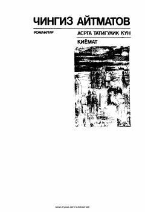

ATInsoniylik va ma'naviy izlanishlar haqidagi ikki buyuk roman.
Ushbu kitob Chingiz Aytmatovning ikki mashhur romani — 'Asrga tatigulik kun' va 'Qiyomat'ni o'z ichiga oladi. Asarlar insoniylik, ma'naviy poklanish, o'tmish va kelajak oldidagi mas'uliyat kabi chuqur falsafiy mavzularni qamrab oladi.